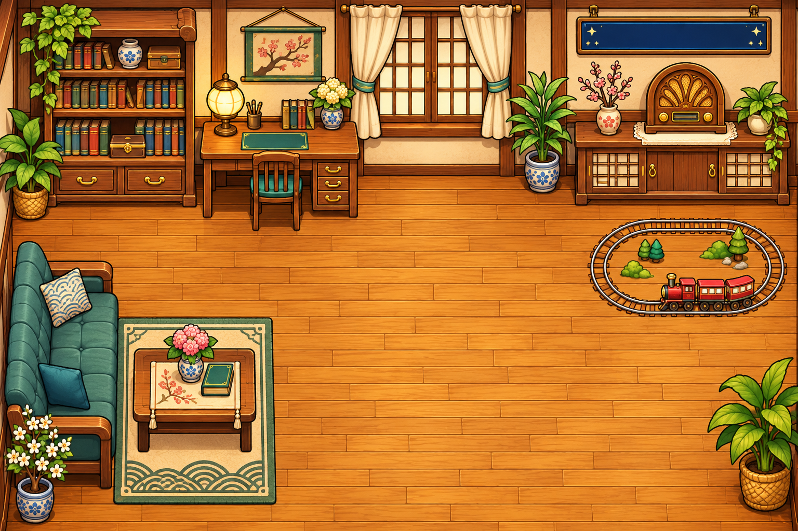
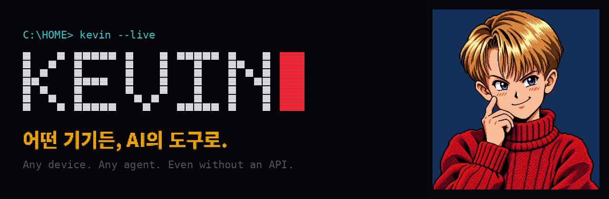

관찰
카메라와 비전·언어 모델로 상황을 해석합니다.
자택경비원부터 산업 현장까지.
앱도, API도 없는 기기를 AI의 도구로.
카메라로 상황을 보고, 기기를 움직이고, 결과를 확인합니다.
집의 전광판과 라디오에서 시작한 KEVIN은
기존 기기를 위한 물리 세계 실행 계층입니다.
시연 앱은 MSI 브리지와 연결된 기기가 필요합니다.
연결 상태에 따라 이용이 제한될 수 있습니다.

친근한 캐릭터가 입구라면,
재사용 가능한 실행 도구가 그 안의 기술입니다.


“크리스마스 분위기 내줘.
눈은 많이.”
{
"preset": "christmas_train",
"snow": "heavy",
"music": "play"
}LED 장면과 라디오 재생을 나누어 계획합니다. 아래 GIF는 생성 프레임 미리보기이며 실물 촬영이 아닙니다.
생성 프레임 미리보기GitHub에 공개된 대기·대화·경보 화면입니다.


공개된 UI 캡처입니다. 캡처 속 연결 표시와 경보 문구가 현재 기기 연결이나 실제 신고를 뜻하지는 않습니다.
안내·축하는 문구와 멜로디를 함께 만드는 구현입니다. 실물 동작은 아직 검증하지 않았습니다.
대화형 게임에서는 모델이 손을 제안하고 Python 규칙이 가위바위보 결과와 점수를 판정합니다.
본다 → 부린다 → 확인한다.
같은 실행 계층을 서로 다른 현장에 연결합니다.
카메라와 비전·언어 모델로 상황을 해석합니다.
기기의 원래 통신법을 AI가 호출할 도구로 엽니다.
기기 응답과 관측한 변화를 분리해 기록합니다.

카메라로 아날로그 계기와 경고등을 읽고, 허가된 설비 동작과 실행 결과 확인으로 연결하는 확장 방향입니다.

“두더지 빨리 올려줘” 같은 말로 게임을 진행하고, 카메라 관찰·점수판·효과음을 연결하는 확장 장면입니다. 실제 두더지 기계 제어는 아직 검증하지 않았습니다.

연동 API가 없는 모니터의 표시값을 읽어 담당자에게 전달하는 관측·알림 시나리오입니다. 기기 조작은 포함하지 않습니다.

기존 패널의 표시를 읽어 도착을 안내하고, 승인된 인터페이스가 있는 경우에만 호출하는 확장 시나리오입니다.

간판과 음악을 하나의 요청으로 묶는 활용 분야입니다. LED·라디오 시연을 매장 환경으로 확장하는 방향입니다.

기존 온습도계와 설비 상태를 관찰하고 펌프·환풍기 동작과 결과를 연결하는 확장 시나리오입니다.
여섯 이미지는 GitHub에 공개된 활용 시나리오 일러스트입니다. 현장 설치·고객 도입·산업 장비 제어를 검증한 사진은 아닙니다. 현재 실물 동작 이력과 프로토콜 시험 범위는 검증 근거에서 구분합니다.
장비 한 대를 교체하는 대신 연결을 재사용합니다.
판매 단위는 에이전트 플랫폼과 기기 연결입니다.
지원 인터페이스가 있는 장비는 교체 없이 연결할 수 있습니다. 매장은 간판·음악을 함께 제어하고, 운영자는 기존 설비의 관측과 실행 기록을 같은 경로에서 다루는 방향입니다.
한 번 만든 연결을 같은 기기 모델과 여러 MCP 에이전트가 재사용합니다. 초기 개발·설정 비용을 여러 사용처에 분산할 수 있지만, 기종 차이와 펌웨어 유지보수 비용은 남습니다.
실물 기기 MCP 도구 팩
활성 기기당 월 · 호출당기기 연결 · 실행 증명
가구당 · 증명 건당기존 월패드 · 설비 연결
단지·현장 단위 계약기존·단종 모델의 연결 유지
모델별 라이선스판매 대상과 과금 방식은 사업 가설입니다. 실제 고객 계약이나 확정 요금제가 아닙니다.
덱의 연 59,000원 가정을 적용한 최종 이용가구 기준 환산입니다.
17만 가구 × 연 59,000원
23만 가구 × 연 59,000원
115만 가구 × 연 59,000원
이용가구 수·가격·이용률은 미검증 가정이며 매출 추정입니다. 플랫폼 계약 매출이나 이익을 뜻하지 않습니다. 고객 획득비·API/음성 비용·현장 지원비·장치별 유지비를 포함한 단위경제성은 추가 검증이 필요합니다.
기기 종류가 늘수록 에이전트가 재사용할 수 있는 실행 경로가 늘어납니다. 모든 기기의 호환이나 비용이 일정하다는 주장은 아닙니다.
계획·기기 응답·관측·서명 기록을 연결해 실행 검증에 활용하는 방향입니다. 실제 촬영과 합성 입력의 출처를 구분합니다.
전광판 · 라디오
간판 · 음악 · 게임
설비 · 제조사 · 유지보수
가정의 실물 시연에서 출발하는 확장 경로입니다. 매장·오락실·산업 현장의 구축·매출 실적으로 제시하지 않습니다. GitHub 사업성 원문 ↗ · 완성 발표 덱 ↗
전송은 성공했지만, 화면은 멈췄습니다.
32프레임 GIF를 보냈습니다. 기기는 ACK를 반환했지만
전광판은 첫 프레임에 멈췄습니다.
실제 전송 문제에서 얻은 호환성 대응입니다.
ACK는 데이터 수신 응답입니다.
물리적 동작의 증거는 아닙니다.
카메라 전후 프레임에서
픽셀 변화와 움직임을 관찰합니다.
별도의 과업별 검증이 필요합니다.
모든 기기에 대해 입증한 단계는 아닙니다.
자유로운 말과 제한된 동작 사이에
명시적인 경계를 둡니다.
구조화된 요청
JSON Schema · enum 동작
허용된 동작만
허용 목록 · 취소
결정적 컨트롤러
기기별 상태 분리
카메라 전후 관찰
SHA-256 · Ed25519
서명 기록은 MCP·컨트롤러 경로의 구현입니다. 웹 브리지는 별도 통합 경로이며, 모든 웹 실행이 카메라 영수증을 생성하는 것은 아닙니다.
이전 작업을 취소하고 기기 상태를 분리합니다. LED만 바꾸는 요청에 라디오를 다시 재생하지 않도록 합니다.
led_scene · radio · say · stop_all. 확장 장치는 device_demo_mcp의 명시적 도구를 사용합니다.
기기 실행 결과와 관측 실패를 구분해 기록합니다. 짧은 대화 이력만 구현했으며, 장기 기억을 보장하지 않습니다.
프레임을 회색조로 변환하고 320×180으로 축소한 뒤 Gaussian blur(1)를 적용합니다. 밝기 차이 24 이상인 픽셀을 세어, 변화 비율 ≥ 0.02이면 changed, 이후 프레임 간 비율 ≥ 0.004이면 moving으로 봅니다. 정확도 지표가 아닌 휴리스틱 기본 임계값입니다.
카메라 흔들림·노출 변화도 감지될 수 있습니다. SHA-256과 Ed25519는 기록의 무결성을 확인하는 수단이며, 카메라의 신뢰성이나 요청 의미의 달성을 보증하지 않습니다.
실물 동작과 프로토콜 시험은 다릅니다.
구현했다는 사실을 실물 검증으로 바꾸지 않습니다.
2026-11-07 · test_receipt.py ↗ 새 탭
합성·모의 입력 기반 검사입니다. 실물 기기 성공률이 아닙니다.
| 대상 / 경로 | 확인한 범위 | 아직 말할 수 없는 것 |
|---|---|---|
| LED 전광판 BLE · 144 × 16 | 실물 장면 동작 이력, 프레임 수 호환성 대응 | 모든 LED 기종과의 호환성 |
| 라디오 Windows · CRF-35B | 집에서 청취한 이력 | 행사장 연결은 완료하지 못했습니다. |
| 카메라 영수증 SHA-256 · Ed25519 | 서명·변조 검증 구현과 테스트 | 실물 전체 경로 검증은 남아 있습니다. |
| WLED python-wled · HTTP | 실제 클라이언트와 loopback 프로토콜 상대 | 소비자 조명 기기의 실물 동작 |
| Home Assistant REST API 일부 | 설정된 조명 상태 읽기·서비스 호출 시험 | 실물 월패드·RS485 배선 검증 |
| TV adb-shell · TCP | 실제 ADB 클라이언트와 TCP 프로토콜 상대 | Android OS 실행이나 실물 TV 검증 |
| IR python-broadlink · UDP | 인증·AES·UDP, 합성 학습 코드, 정지 선행조건 | sent_unverified는 가전 수신 확인이 아닙니다. |
| 로봇청소기 Valetudo API 일부 | 지정 구역 시작·일시정지 프로토콜 시험 | 실물 주행·청소 완료·청결도 감지 |
확장 트랙 04–07의 자연어 라우팅은 아직 통합하지 않았습니다. Loopback 시험은 로컬 프로토콜 상대를 사용하며 소비자 실물 기기 시험을 대신하지 않습니다.
저장소 루트에서 격리된 로컬 데모를 실행하세요.
모델 API·BLE·하드웨어 없이 loopback 시뮬레이션으로
요청과 기기 응답의 경계를 살펴볼 수 있습니다.
python3.11 -m venv .venv
.venv/bin/python -m pip install -r requirements-demo.txt
.venv/bin/python src/demo_server.py
소스 코드 소스 기준 ab0a856
python src/kevin_mcp.py로 stdio MCP 서버를 등록할 수 있습니다. 실제 실행에는 Python 의존성, 연결 기기와 관찰 경로 설정이 필요합니다. 위의 격리 데모와는 다른 실행 경로입니다.
WLED는 python-wled, TV는 adb-shell, IR은 python-broadlink 클라이언트를 재사용합니다. Home Assistant와 Valetudo는 공개 API의 일부를 구현했습니다. 알려지지 않은 프로토콜을 모두 자율 분석한 시스템이 아닙니다. 모델은 교체 가능하며 웹은 OpenAI, 로컬은 선택적으로 Ollama를 사용합니다.
지원되는 인터페이스가 있다면 기존 기기를 도구로 연결할 수 있습니다. 에이전트 플랫폼, 매장, 기존 설치 환경으로 커넥터를 재사용하는 방향을 검토하고 있습니다.
B2B 계약과 라이선싱은 사업 가설입니다.
고객 도입이나 매출을 입증한 단계는 아닙니다.
로컬 모델 Ollama를 선택할 수 있습니다. 웹 AI와 클라우드 음성 기능은 연결이 필요하며, 모든 기능이 오프라인으로 동작하는 것은 아닙니다.
아닙니다. 지원 인터페이스와 설정이 필요합니다. 미지의 프로토콜을 자율 발견하는 기능은 완성하지 않았습니다. 지원되는 기기는 기존 하드웨어를 교체하지 않고 연결하는 방향입니다.
이 페이지는 로컬 시각 예시만 보여줍니다. 실제 제어에는 MSI 브리지, 설정된 기기, 필요한 연결 권한이 있어야 합니다. 시연 앱의 가용성도 해당 환경에 달려 있습니다.
서명은 기록이 바뀌었는지 확인합니다. 카메라의 신뢰성이나 행동의 의미를 증명하지 않습니다. 픽셀 변화 관찰과 과업 달성 검증은 별개입니다.
KEVIN is a physical execution layer for agents. It maps requests to allowlisted device operations and separates device acknowledgements from camera observations. LED hardware has operation history; extension adapters are tested against loopback protocol peers, not consumer hardware. Signed receipts protect record integrity, not semantic task success.